|

Designing dynamic simulations
In CoppeliaSim, only a limited number of objects will be dynamically simulated. Those are shapes, joints and force sensors, but it will depend on the scene structure and object properties, whether a given object will be dynamically simulated. Dynamically simulated objects can be easily recognized during simulation, since following icon will appear next to the object's alias in the scene hierarchy:
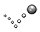
[Icon marking dynamically simulated objects]
Double-clicking the icon in the scene hierarchy (during simulation only) will display some information related to the object's dynamic behavior. Objects that are supposed to by dynamically simulated but which, for a reason or another cannot be dynamically simulated, will display following icon instead:
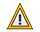
[Warning icon when an object cannot be dynamically simulated]
Static/non-static, respondable/non-respondable shapes
Shapes can be classified into 4 types depending on their behavior during dynamic simulation:
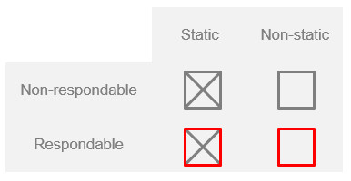
[Dynamic simulation main shape types]
During dynamic simulation, static shapes will not be influenced (i.e. their position relative to their parent object is fixed), whereas non-static shapes will be directly influenced by gravity or other constraints (e.g. dynamically enabled joints, see hereafter). Respondable shapes influence each other during dynamic collision (i.e. they produce a mutual collision reaction, they will bounce off each other). Following figure illustrates the static/non-static, respondable/non-respondable behaviors:
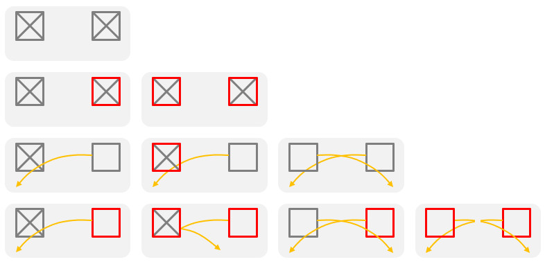
[Static/non-static, respondable/non-respondable shape behaviors and interactions]
Two respondable shapes will always produce a collision reaction, unless their respective collision masks don't overlap. Static/non-static, respondable/non-respondable shape properties, as well as collision masks can be set in the shape dynamics properties dialog.
Simple constraints between shapes or force sensors
Non-static shapes will fall (i.e. be influenced by gravity) if they are not otherwise constrained. Dynamic constraints between shapes can be set-up by attaching two shapes together via a dynamically enabled joint, a dynamically enabled force sensor, or via a dummy-dummy dynamic overlap constraint.
Following represent a simple constraint between two shapes:
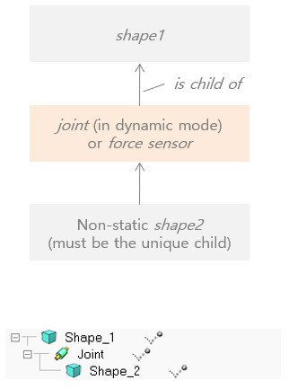
[Dynamically enabled joint or force sensor]
Above joint is considered to be dynamically enabled.
Loop closures and other constraints
Sometimes a mechanism displays loops, e.g. in parallel machines, and other times additional rigid constraints between shapes are required. In those situations, special dummy-dummy dynamic overlap constraints can be introduced:
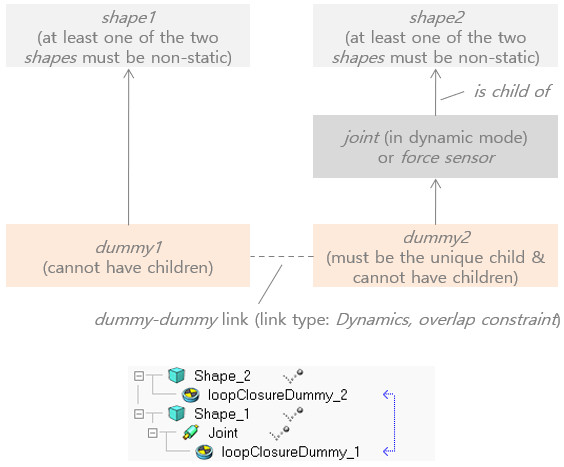
[Dynamic overlap constraint involving a joint or force sensor]
Above joint is also considered to be dynamically enabled.
Following represents a rigid constraint between two shapes, that do not have to be in the same hierarchy tree/branch:
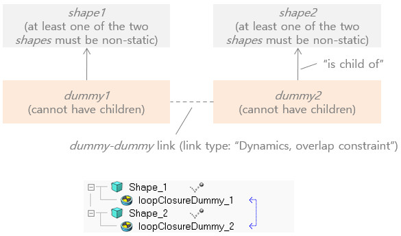
[Dynamic overlap constraint, that rigidly binds two shapes]
Rigid compounds
Two non-static shapes that are not linked through dynamically enabled joints or force sensors will move independently from each other during dynamic simulation. If you want two or more shapes to behave as one single shape, you will have to group them (Menu Bar --> Edit --> Grouping/Merging --> Group selected shapes). Make sure you adjust the moment of inertia of the final shape appropriately. Make sure you also read the section about pure shapes further down:
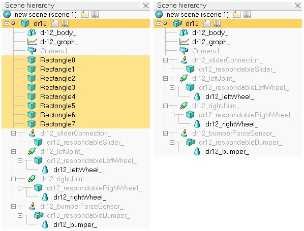
[Compound of several non-static shapes to obtain a single non-static shape]
Compound shapes will behave as a rigid entity and also share identical dynamic properties (e.g. friction coefficient). Sometimes a rigid entity with differentiated dynamic properties is needed. In that case, shapes can be rigidly linked via a force sensor.
Design consideration 1
Use pure shapes. Whenever possible, try using pure shapes as respondable shapes: pure shapes are much more stable and faster during dynamic simulation. Instead of using the complicated triangular mesh of a robot model as respondable shape, or its slightly better convex representation, try approximating the triangular mesh with several pure shapes, then grouping them [Menu bar --> Edit --> Grouping/Merging --> Group selected shapes] (beware that if you merge pure shapes instead of grouping them, the resulting shape will not be a pure shape anymore). Following figure illustrates a robot's hidden respondable pure shapes:
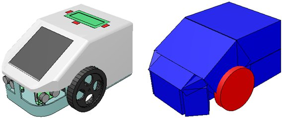
[Dynamic robot model (left) and underlying pure non-static shapes used for dynamic simulation (right)]
A convenient way to extract pure shapes from complex non-pure shapes, is to enter the triangle edit mode for the complex shape, then selecting regions of interest and extracting rectangular, spherical or cylindrical pure shapes. Refer to the Extract cuboid, Extract cylinder, and Extract sphere buttons in the triangle edit mode. It is also always good practice to visualize and verify a scene's dynamic content using the dynamic content visualization toolbar button (see the design consideration 3).
When a body can collide, but not constantly, or does not play a important role in the stability of a mechanism/robot, then it is not absolutely necessary to use pure shapes, and convex shapes could be a viable alternative too:
Design consideration 2
Use convex shapes instead of random shapes. Whenever possible, try using pure shapes as respondable shapes (see design consideration 1). This is however not always easy to do, or practical (think of a torus for instance). In that case, you can generate a convex shape, or a convex decomposed shape (i.e. a simple/compound shape containing only convex meshes). Convex shapes perform faster and are more stable than random shapes (but they are still not as fast and stable as pure shapes!).
Select the shapes you wish to simplify as convex shapes, then select [Menu bar --> Edit --> Morph selected shapes into convex shapes...]. Refer also to the item [Menu bar --> Add --> Convex decomposition of selected shapes...]. Following figure illustrates a convex decomposition:
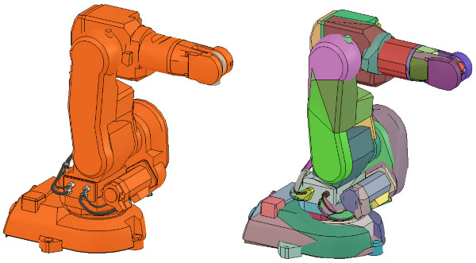
[Non-convex model (left) and corresponding convex-decomposed model (right)]
Design consideration 3
Carefully inspect the dynamic content of a scene. It can sometimes be a little bit confusing to work with hidden shapes meant to play an active role in the simulation. This is often the case with dynamically enabled shapes, joints or force sensors: indeed, they are most of the time hidden to the viewer's eye. The dynamic content can however always be inspected DURING a simulation, by activating the dynamic content visualization button:
[Dynamic content visualization button]
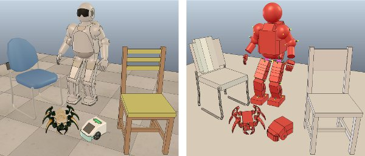
[Normal and "dynamic content" scene visualization]
Dynamic objects will appear in various colors, depending on their function or settings. Refer to following figure:
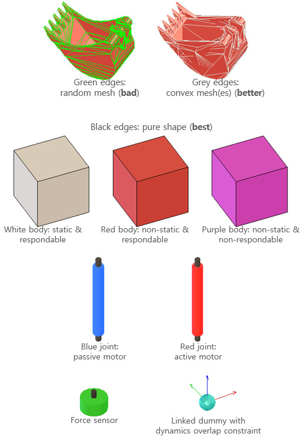
[Color coding for dynamic objects (in dynamic content visualization mode)]
Notice in above's figure the appearance of non-pure shapes: they have their triangular mesh contour represented in green or grey color. Dynamically simulated non-pure shapes should be avoided at all cost, since they require much longer calculation times, and present a not very stable behaviour (convex shapes are however faster and more stable than non-convex shapes). Refer also to the design consideration 1 here above.
Design consideration 4
Use a simple hierarchical structure. When building a model that is meant to be simulated dynamically, attach all non-dynamic objects to the dynamic objects (non-static shapes and dynamically enabled joints). Above's wheeled robot model is illustrated in following figure:
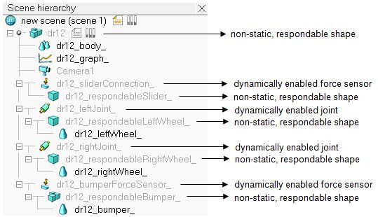
[Dynamic elements in a robot model]
Design consideration 5
Carefully chose the model base object. When building a dynamic model, actually also when building a static model, always carefulls consider what role the model will be playing. Will it be used on its own? Can it be built on top of another model or object? Or can it accept other models or objects to be built on top of it? Consider following example:
You have created a model of a mobile robot. You have also created a model of a gripper. Clearly you want to be able to easily attach the gripper model on top of the robot model. The other way round will never make sense (attaching the robot model on top of the gripper model). You might also want to use the robot model and the gripper model on their own. Following is the view of the scene hierarchy of a possible model definition:
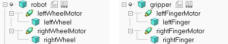
[Example model definition of a robot and a gripper]
Notice the model icon next to the 'robot' and 'gripper' shape objects. This indicates that all objects built on top of them are part of the same model definition. The two models operate well on their own. However if you try to attach the gripper on top of the robot (by selecting the gripper model, then the robot model, then clicking [Menu bar --> Edit --> Make last selected object parent]), the gripper will not be staying fixed on the robot during simulation. Following is the scene hierarchy of above two models, where the gripper has been attached to the robot:
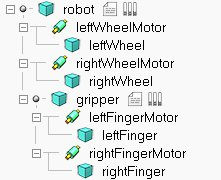
[Non-functional robot-gripper model assembly]
Notice in above scene hierarchy how the pure shape "gripper" is built on top of the pure shape "robot". And remember that non-static shapes will fall if not otherwise constrained by a joint of force sensor... exactly, we need a force sensor in-between "gripper" and "robot" in order to have a rigid connection between both!
The correct model definition of the robot would have to include an attachment point (or several of them) for the gripper as illustrated in following figure:
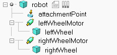
[Example model definition of a robot with an attachment point]
The attachment point is a simple force sensor. Assembling the gripper model with the robot model above results in a gripper that stays fixed relative to the robot:
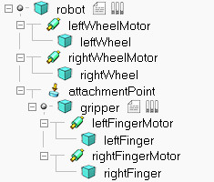
[Functional robot-gripper model assembly]
To simplify the assembly procedure even more, you can customize the behaviour of the assembling toolbar button, in order to automatically put the gripper onto the attachment point, with the correct relative position/orientation. For further details refer to the section on models and the dialog item Assembling in the object common properties.
Design consideration 6
Use reasonable sizes. Shapes that are very long and thin, or that are too small might behave strangely (jittering, jumping). Try keeping sizes above 3 centimeters if possible. Otherwise you can adjust the internal scaling parameter in the dynamics engines general properties dialog.
This requirement can be loosened by using a different engine, or by selecting a more precise dynamics configuration mode.
Design consideration 7
Keep masses similar and not too light. When linking two shapes with a dynamically enabled joint or a dynamically enabled force sensor, make sure the two shape's masses are not too different (m1<10*m2 and m2<10*m1), otherwise the joint or force sensor might be very soft and wobbly and present large positional/orientational errors (this effect can however also be used as a natural damping sometimes). Additionally, very low mass shapes should be avoided since they won't be able to exert very large forces onto other shapes (even if propelled by high force actuators!).
This requirement can be loosened by using a different engine, or by selecting a more precise dynamics configuration mode.
Design consideration 8
Keep principal moments of inertia* relatively large. Try keeping the principal moments of inertia / mass (*refer to the shape dynamics properties dialog) relatively large, otherwise mechanical chains might be difficult to control and/or might behave in a strange way.
This requirement can be loosened by using a different engine, or by selecting a more precise dynamics configuration mode.
Design consideration 9
Assign dynamic shapes to layer 9. Assign all dynamic shapes which are supposed to be hidden to layer 9 (refer to the object common properties): in CoppeliaSim, by default, all layers are visible, except for layers 9-16. When editing or testing a scene, you can then quickly visualize all hidden shapes in the scene by temporarily enabling layer 9 (refer also to the layer selection dialog).
Design consideration 10
Never have a static shape between two dynamic items. The static shape will interrupt the logical behaviour of the dynamic chain:
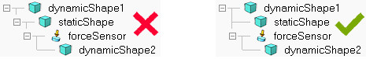
[Wrong and correct construction]
Design consideration 11
Never have a static respondable shape on top of a dynamic item. Static means the shape's trajectory cannot be influenced by any collision, but if at the same time it is respondable, this means that it can itself influence other shapes' trajectories via collision. The simulation result would be unpredictable.
|